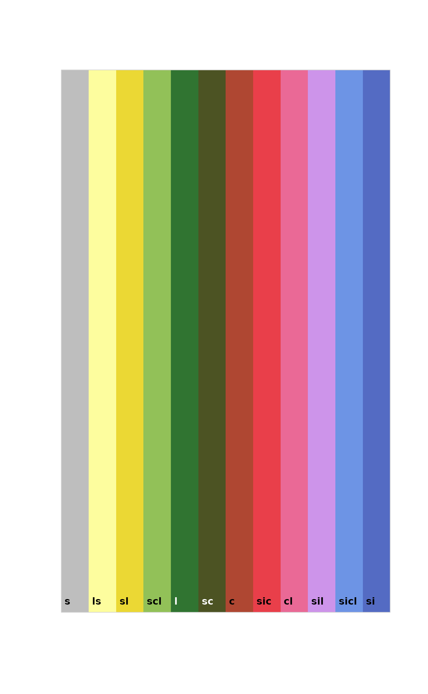
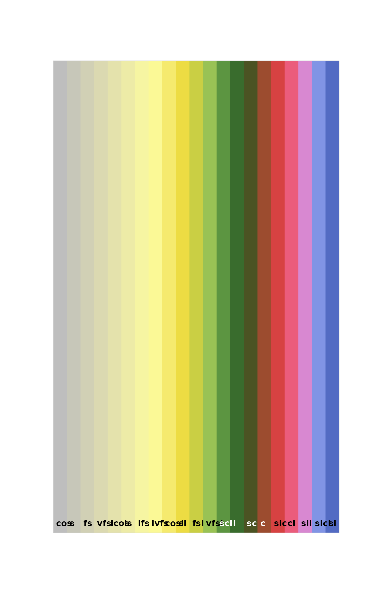

Suggested color palettes for USDA soil texture classes, ranked according to average plant-available water holding capacity. The default color mapping schema is based on a palette used by SoilWeb applications.
Examples
# base 12 soil texture classes
# ranked by plant available water-holding capacity
d <- soilTextureColorPal(simplify = TRUE)
soilPalette(d$color, lab = d$class, lab.cex = 1)

# full 21 soil texture classes
# ranked by plant available water-holding capacity
d <- soilTextureColorPal(simplify = FALSE)
soilPalette(d$color, lab = d$class, lab.cex = 1)
